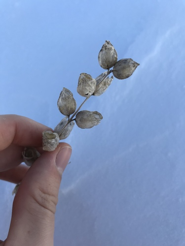

Colias interior butterfly / moth
Boreal, blueberry feeder.
7 documented plant relationships.

 Douglas Goldman, some rights reserved (CC BY-SA), uploaded by Douglas Goldman")
 Alan Prather, some rights reserved (CC BY), uploaded by Alan Prather")

 Douglas Goldman, some rights reserved (CC BY-SA), uploaded by Douglas Goldman")
 gwt2102, some rights reserved (CC BY)")
 Douglas Goldman, some rights reserved (CC BY-SA), uploaded by Douglas Goldman")